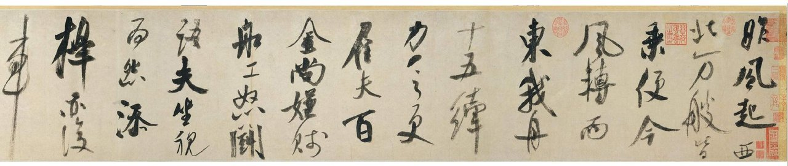
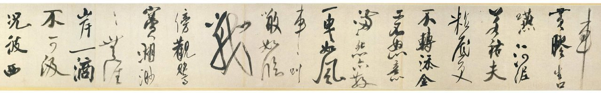
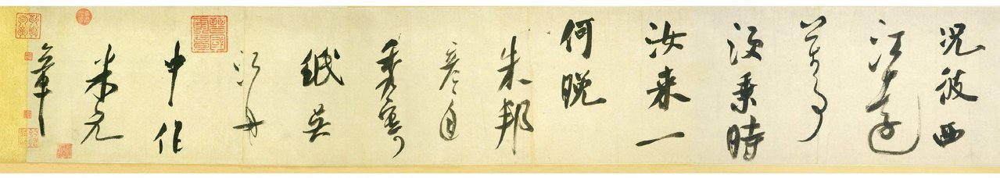

蔣勳先生新書「漢字書法之美-舞動行草」中，對米芾的「吳江舟中詩卷」有簡短的介紹。我對米書盲目崇拜，吳江舟中詩卷則是米書中少數大字作品，極為壯觀。
吳江舟中詩卷縮圖如下。書跡現存紐約大都會博物館。



較為精采的圖片，當然在Yahoo部落格上是沒有辦法擺的；還是請看閑雅的連結吧：
http://www.shianya.com/phpBB2/viewtopic.php?t=4393
關於此作是真是偽，在這個閑雅的主題裡，也曾有過精采的辯論，不過部份討論內容已經流失。
我對它的真偽也不無懷疑！不過，如果這件現存美國大都會博物館的「吳江舟中詩卷」並非米芾真跡，個人相信應該也有所本！（若偽造者真能憑空創作出這件轟動武林的作品，其本事應該足以在書法史上留名吧？）也就是說，即使此書跡並非真本，也唯有藉由它，我們才可能見識到吳江舟中詩的風采。所以個人對這件作品，滿心存著感謝！
仿/臨米書如果找出缺點，是因為仿作者功力不夠或露出馬腳；若有精采之處，則當然是因為米芾厲害囉！這就是我對米老的盲目崇拜...